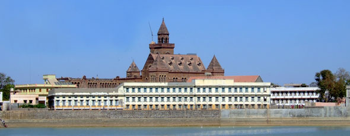

Bhuj connects you to a range of civilizations and important events in South Asian history through prehistoric archaeological finds, remnants of the Indus Valley Civilization (Harappans), places associated with the Mahabharata and Alexander the Great's march into India and tombs, palaces and other buildings from the rule of the Naga chiefs, the Jadeja Rajputs, the Gujarat Sultans and the British Raj. Over the 4000-year inhabitation of Kutch it developed trading and migratory relationships with ancient civilizations as far abroad as Zanzibar, the Middle East and Greece, fostering a unique ethnic mix of peoples and traditions in the region.

In a walk around Bhuj, you can see the Hall of Mirrors at the Aina Mahal; climb the bell tower of the Prag Mahal next door; stroll through the produce market; have a famous Kutchi pau bhaji for lunch; examine the 2000-year-old Kshatrapa inscriptions in the Kutch Museum; admire the sculptures of Ramayana characters at the Ramakund stepwell; walk around Hamirsar Lake and watch children jumping into it from the lake walls as the hot afternoon sun subsides; and catch the sunset among the chhatardis of the Kutchi royal family in a peaceful field outside the center of town.
Kutch has had four thousand years of inhabitation to build up a long and complex history, especially of its capital, Bhuj. The word kutch means “island” in classical Sanskrit, referring to the fact that in antiquity, the Ranns (meaning deserts) of Kutch were submerged by the Indus River flowing into the sea, leaving the area isolated by an immense shallow body of water. In 1819 an earthquake changed the topography and the Indus began to flow further westward, leaving the Ranns (now separated into the Great Rann and Little Rann) as a vast desert of saline flats. During heavy rains, the Ranns still flood, leaving islands, known as beyts, such as Khadir.
Some historians and archaeologists posit that the Harappans (also known as the Indus Valley Civilization) crossed the region by land, from the Indus River to the Sabarmati. Others doubt this, saying that the Ranns would have been permanently underwater at that time and crossing the deserts from Sindh would have to have been done further north. Either way, Harappan artifacts have been found in Khadir, making it one of the longest-inhabited regions of India. Bhuj is almost certainly mentioned in writings of two milennia ago; the writer Strabo (66 BC-24 AD) writes of Tejarashtra, whose principal city Tej is the modern-day Bhuj in all likelihood.
From the 8th to 16th centuries, Kutch was ruled by the Samma Rajputs from Sindh, during what is considered to be Sindh's Golden Age. As the power center in Sindh declined, there was a series of complicated successions and intra-familial murders, leading eventually to the installment of Lakho Jadeja, descended from the Samma Rajputs, as king. From then on the monarchy was known as the Jadeja Rajputs, who ruled directly from Kutch, not from Sindh. In 1549 Khengarji I moved the capital from Anjar to Bhuj, given its strategic location in the center of Kutch. The name of the city was derived from Bhujiyo Dungar, the 160 m. hill that overlooks the city, and said to be the residence of the Great Serpent Bhujang, to whom a temple stands at the top of the hill. In the late 16th century, the area came under Mughal dominance, though the Rajput kings still held local administrative powers. King Bharmal I gained favor with the Mughal Emperor by sending many extravagant gifts, and when the Kutchi rulers granted free passage and hospitality to pilgrims bound for Mecca, the Mughals exempted them from paying tribute to the Emperor, and even allowed them to mint a local currency, the kori (which you can see examples of at the Kutch Museum.) At the beginning of the 18th century, Rao Godiji saw the need for Kutch to protect itself in the more volatile vacuum left behind by the decline of the Mughal Empire. He commisioned the building of immense fortifications for Bhuj, including 11 m. walls, and 51 guns around the edge of the city.
In 1741, Lakhpatji I ascended the throne. An extravagant monarch, he commissioned the world-famous Aina Mahal palace, built by master artisan Ramsinh Malam, who trained in Holland and brought back European style and techniques for his designs. Lakhpatji was also a poet, known for inviting poets to the royal palace, as well as dancers and singers. His legacy of encouraging cultural development is still felt today, and having led the kingdom to flourish, he was well loved. Not so his successor, Raydhan II, who was a brutal, iron-fisted madman (most accounts agree he was losing mental stability as the years progressed.) He converted to Islam, which in itself was not a problem until he tried to begin forcibly converting all of his subjects. Though his cruel reign wrecked havoc on the populace, after his decline things evidently returned to normal, and the religious diversity of Kutch continued.
In 1815, the British arrived and seized Bhujiyo Dungar hill. The state became a British protectorate, as the king acknowledged British sovereignty in exchange for local autonomy. Like the Mughals before them, the British began administrative authority over Kutch, but not direct rule. More concerned with securing the Sindh border than collecting resources, there was little British intrusion into local life. In fact, they managed to make peace between the Kutchi kingdom and its neighbors, leading to general prosperity in the area. Building projects abounded in the 19th century, with Pragmalji II on the throne. He had the Prag Mahal palace built, as well as the Ranjit Vilas palace, the Vijay Vilas palace in Mandvi, and many hospitals, schools, irrigation projects and roads. Later considered a princely state, Kutch would continue thus until joining with a newly independent India.
Upon independence, Kutch became a state in India, while neighboring Sindh joined Pakistan. This cost Kutch the nearby major port of Karachi, leading to the development of Kandla as an important port for the region. Twice, territorial disputes with Pakistan over parts of Kutch have led to fighting, once just before the Second Kashmir War and once around the time of the Kargil Conflict. Today no border problems exist, and because the actual frontier lies within the Great Rann, it would be extremely difficult for anyone to cross the vast expanse of very harsh desert, but the Indian Army keeps a close watch anyway.
How to get there:
By road: For those traveling from Ahmedabad, the bus may be more convenient than the train, though slightly more expensive. Several private companies run sleeper buses (with a full horizontal bunk), leaving the city for Bhuj between 8pm and 11pm, arriving in Bhuj between 6am and 8am the next morning. These bus companies all have their offices around Paldi in Ahmedabad; Sahjanand Travels and Patel Travels are two recommended ones. There are also private sitting (non-sleeper) buses, and ST (State Transport) buses that make the trip for less money but considerably less comfortable seats. Once in Bhuj, ST buses go to larger destinations around the district, private jeeps can also be rented (a good option for larger parties), and some smaller places can only be reached by chhakdas.
By rail: Two daily express trains, the Bhuj Express and the Kutch Express, go from Bhuj to Ahmedabad (8hrs) and on to Mumbai (16hrs.) However, both trains pass through Ahmedabad in the middle of the night, as the schedules are designed to depart and arrive and reasonable hours from Bhuj and Mumbai, not Ahmedabad.
By air: One or more flights daily connect Bhuj to Mumbai.